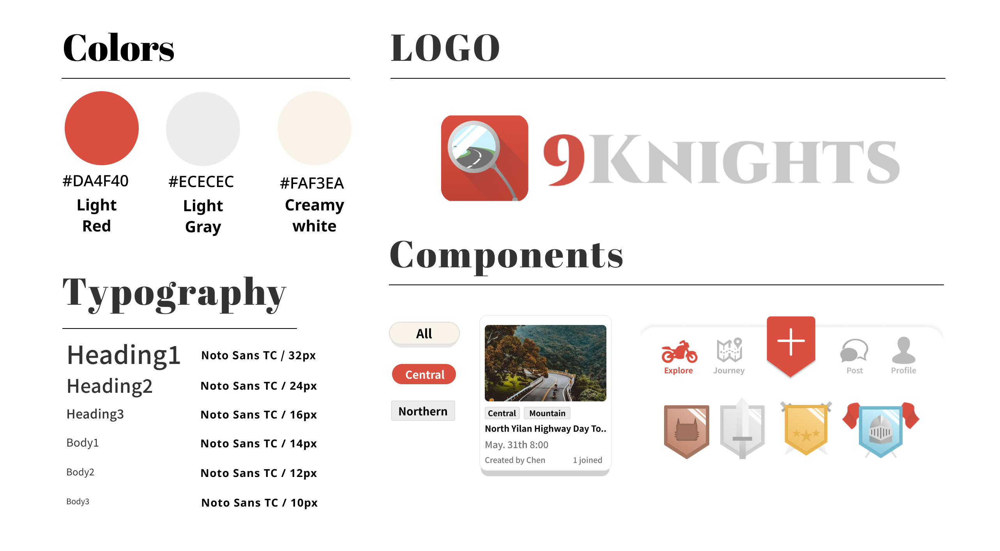

MY ROLE:
UI/UX designer
TOOLS:
Figma
Photoshop
Photoshop
DURATION:
10 weeks
OVERVIEW
9Knights centers around the concept of 'Riding & Bonding', aiming to create a motorcycle-centric platform where enthusiasts easily find riding companions. This app facilitates riders to locate fellow riders and communicate in real-time while riding, ensuring mutual assistance and safety. Beyond connecting riders, it minimizes inconveniences and risks during rides, serving as a virtual rearview mirror for all riders.
MOTIVATION
In today's digital age, online socializing has become a norm, and numerous social platforms cater to diverse user groups. However, we noticed a gap in the realm of motorcycles – there's a lack of platforms specifically designed for enthusiasts like us in Taiwan. As passionate riders, we identified this need within the community. Hence, we aim to create a platform that connects people who share a love for riding, enabling them to find not just riding companions but also like-minded individuals who share their passion for motorcycles.
Join Journey
Users can join journeys organized by others or become hosts themselves.
Explore the journey page to view schedules and descriptions, with each stop marked on the map for detailed zoom-in viewing.
Explore the journey page to view schedules and descriptions, with each stop marked on the map for detailed zoom-in viewing.

Journey Map
During the ride, riders can stay connected via real-time maps and communication to minimize instances of getting separated or being unaware in case of emergencies.
They can also communicate via text in a chat room and check the itinerary of the trip.
They can also communicate via text in a chat room and check the itinerary of the trip.
Personal Page
Personal Page allows users to showcase their personality, share published articles, and record past trips.
It also enables others to provide feedback after the trip, which can encourage personal behavior or serve as a reference.
It also enables others to provide feedback after the trip, which can encourage personal behavior or serve as a reference.
RESEARCH
Questionnaire Survey
Through an online Google form distributed to relevant motorcycle communities, I gathered 45 responses, with participants' ages ranging from 18 to 50 years on average. The purpose of this survey was to understand whether motorcycle enthusiasts are seeking riding companions and to clarify the difficulties and needs they encounter during group rides. My aim is to consolidate user requirements and make group riding and socializing a more enjoyable and seamless experience.
49%
individuals consider socializing as their primary reason for enjoying motorcycle riding, and 44% have faced difficulties in finding riding companions.
80%
reported that their inability to align schedules was the primary reason for their inability to participate in group rides.
57%
encountered communication difficulties while riding.
USER PAINPOINTS
● Challenges in planning routes and logistics for organized rides.
● Common issues with poor communication and coordination during group rides.
● Difficulty in coordinating schedules for participation and finding compatible riding partners.
● Maintaining privacy while socializing.
● Difficulty in obtaining or insufficient group riding information.
● Common issues with poor communication and coordination during group rides.
● Difficulty in coordinating schedules for participation and finding compatible riding partners.
● Maintaining privacy while socializing.
● Difficulty in obtaining or insufficient group riding information.
GOALS
1. Streamline Planning for Group Rides.
2. Improve Communication in Group Rides.
3. Foster Shared Riding Interests.
4. Enhance Safety Measures and Trust.
5. Increase opportunities to meet fellow riders
6. Privacy focused.
2. Improve Communication in Group Rides.
3. Foster Shared Riding Interests.
4. Enhance Safety Measures and Trust.
5. Increase opportunities to meet fellow riders
6. Privacy focused.
– COMPETITOR ANALYSIS –

COMPETITOR SUMMARY
The target audience differs somewhat from that of competitors, but the age distribution is quite broad. Most people prioritize privacy and activity quality, so users tend to desire the ability to choose their interactions freely and selectively. They might not prefer social activities that are overly open for random participation.
In this regard, it might be worth rethinking how to provide users with space in their social interactions, ensuring that functionalities cater to the specific needs of the target audience.
In this regard, it might be worth rethinking how to provide users with space in their social interactions, ensuring that functionalities cater to the specific needs of the target audience.
DEFINE
I created personas representing two different age groups to define our targets and gain a deeper understanding of the issues they might encounter. Using the user journey, I identified opportunities throughout the entire app usage process from the user's perspective. By combining these methods with research findings, we solidified the project's fundamental design goals and key functionalities.
User Persona
User Journey

– DEFINE FEATURES –
REQUIREMENTS
● Make friends in the biking community
● Share interests and hobbies
● Plan trips
● Enhance communication during rides
● Share and record journeys
● Easily find riding companions
● Share interests and hobbies
● Plan trips
● Enhance communication during rides
● Share and record journeys
● Easily find riding companions
SOLUTIONS
1. Freedom to create events
2. User-friendly trip planning
3. Discussion forums for interaction
4. Tracking fellow riders' activities and chatting
5. Integration of location and real-time communication
2. User-friendly trip planning
3. Discussion forums for interaction
4. Tracking fellow riders' activities and chatting
5. Integration of location and real-time communication
DESIGN PAINS & GOALS
1. Complexity in creating events leads to abandonment
2. Effectiveness of location and communication
3. Engaging information presentation for event participation
4. Intuitive interface operation and sleek design
5. Security concerns
2. Effectiveness of location and communication
3. Engaging information presentation for event participation
4. Intuitive interface operation and sleek design
5. Security concerns
IDEATE
Structuring ideas
Information Architecture
Based on the summarized main features and functions, I categorized the types and elements of each function, and constructed the allocation and connections of the overall functionality.
The most critical functionalities and objectives revolve around creating journeys, participating in them, and utilizing the journey map feature during the collective riding experience.
Sketching Operational Flow
Flow Chart
By considering the actions required for users to accomplish their intended goals, I've devised the user flow and page layout, guiding them through the process to fulfill their objectives.
Top Image: The user enters the main page and proceeds to join a riding journey until the completion of the group riding activity.
Bottom Image: The user selects the process of creating their own journey and posting content.functionality.
Visualized Workflow
Wireframe
Transforming paper sketches and mental concepts into low-fidelity visuals to visualize the process and test the smoothness of page transitions.
DESIGN

Named with a double meaning from Chinese characters combined with the meaning of 'knights' in English, utilizing the prevalent dark red and gray colors from medieval knights, complemented by bright and warm tones to attract users. The red color signifies passion, alertness, aligning with the product's objectives. As the user base is diverse in age, the interface remains clean, smooth, and user-friendly. The logo image represents a motorcycle's rearview mirror, symbolizing the essence of the product.
Defining the Design Philosophy
Design guideline
Named with a double meaning from Chinese characters combined with the meaning of 'knights' in English, utilizing the prevalent dark red and gray colors from medieval knights, complemented by bright and warm tones to attract users. The red color signifies passion, alertness, aligning with the product's objectives. As the user base is diverse in age, the interface remains clean, smooth, and user-friendly. The logo image represents a motorcycle's rearview mirror, symbolizing the essence of the product.
First Mock up & Prototype
.png)
The first version of the HiFi prototype was tested on a small scale with three participants, and we received some usability feedback. Additionally, the advising professor provided me with some suggestions. After summarizing these insights, I proceeded with the first round of revisions.
The key changes made in the first revision were:
1. The predominant use of the primary color red appeared excessively dominant, creating visual inconsistencies due to its overt emphasis.
2. The initial use of some serif fonts intended to evoke a vintage style, but resulted in readability issues and an inconsistent visual theme.
3. Simplification of the complexity in the trip planning interface.
4. Redesigning the presentation of the map page.
5. Reassess the usability issues on each page, such as adding prompts and reducing operational confusion.
1. The predominant use of the primary color red appeared excessively dominant, creating visual inconsistencies due to its overt emphasis.
2. The initial use of some serif fonts intended to evoke a vintage style, but resulted in readability issues and an inconsistent visual theme.
3. Simplification of the complexity in the trip planning interface.
4. Redesigning the presentation of the map page.
5. Reassess the usability issues on each page, such as adding prompts and reducing operational confusion.
Second Mock up & Prototype
.png)
–FINAL ITERATIONS –
The second round of testing involved five users at an on-campus exhibition. During this test, we identified design elements that led to user misinterpretation and encountered usability issues. Subsequently, we made further adjustments to address these problems. The following outlines the main challenges faced and the solutions implemented through these two rounds of design revisions.
RESULT
CONCLUSION
This project was a collaborative graduation project between two individuals, and it was my first attempt at creating a complete project. I was responsible for all aspects of the UI/UX design. It involved ideation, gathering and researching user needs, and producing the entire design from sketches. I implemented a prototype of the app using SwiftUI, which marked my initial experience with Swift programming. Throughout the process, there were numerous iterations and learning experiences. I encountered various shortcomings and gained valuable insights.
During the initial stages, I had numerous features in mind, but this led to a diluted focus on the most prominent aspects. Lack of familiarity with design thinking caused me to overlook vital factors and details. I'm still learning to conduct effective user research and testing, understanding the varied user needs, and addressing their pain points accurately is a critical area for improvement.
The UI underwent several revisions, and I learned how color combinations and their application impact the overall layers and user experience. I gathered numerous UX insights through this project, prompting me to delve deeper into the concepts of UI/UX.
During the initial stages, I had numerous features in mind, but this led to a diluted focus on the most prominent aspects. Lack of familiarity with design thinking caused me to overlook vital factors and details. I'm still learning to conduct effective user research and testing, understanding the varied user needs, and addressing their pain points accurately is a critical area for improvement.
The UI underwent several revisions, and I learned how color combinations and their application impact the overall layers and user experience. I gathered numerous UX insights through this project, prompting me to delve deeper into the concepts of UI/UX.